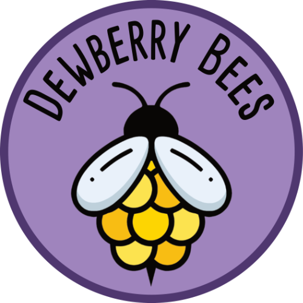
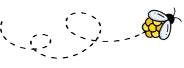

Dewberry Bees
100% Pure, raw honey produced locally in Nailsea, North Somerset

We're a small, passionate beekeeping operation dedicated to producing beautiful, raw, natural honey and bee products. From hive to jar, our bees work hard for every drop foraging in the fields surrounding their hives in Nailsea.
Proud members of the BBKA and North Somerset Beekeepers